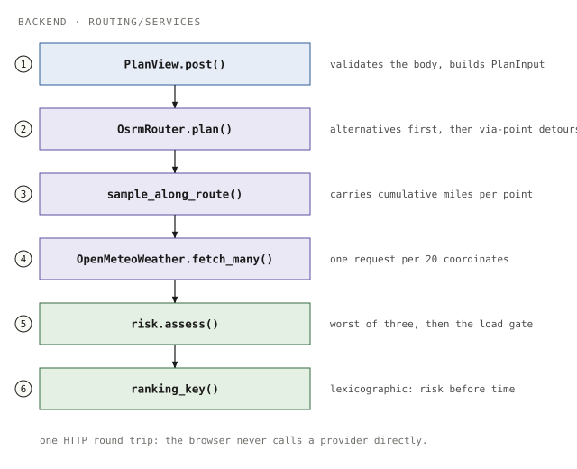
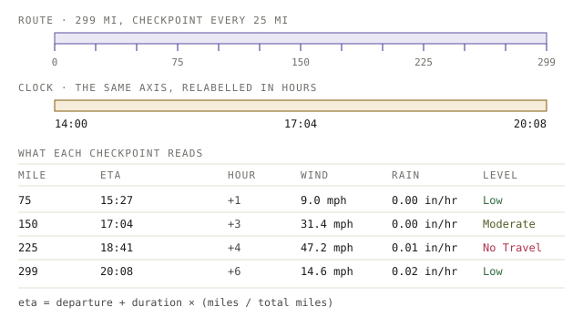
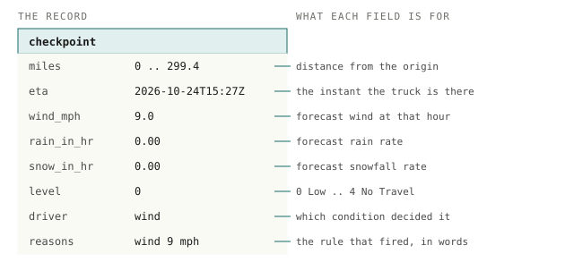
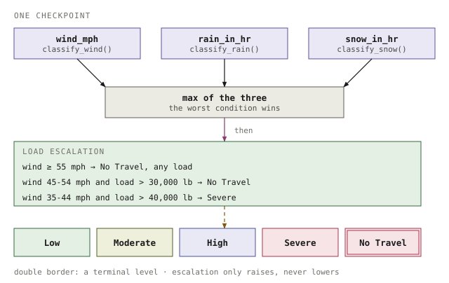
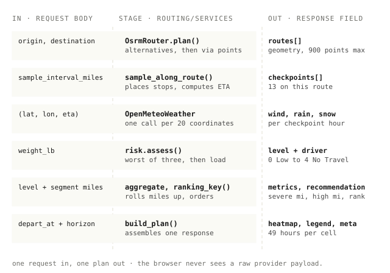

Design dossier · the shape of the thing, in five figures
Weather-Aware Truck Routing
The request pipeline, the ETA mechanism, what a checkpoint carries, how a level is decided, and why the fastest route sometimes loses.
The one idea
Weather is scored at arrival, not at departure. A 299 mile route crosses six hours of forecast. Checkpoint 9 is not “weather now” — it is the weather at the hour the truck reaches mile 225. Everything else here follows from that one substitution.
Colour key for this set
the Django request path
third-party providers and their calls
the risk rules and the ordering
the record that leaves the API
time: departure, arrival, state changes
Severe and No Travel: the failure end
a neutral part, outside the rule engine
Moderate
1
One HTTP request crosses six stages before the browser draws anything.

2
A checkpoint is scored with the weather at the hour the truck arrives, not at departure.

3
Each checkpoint carries its own evidence, so any colour on the map can be audited.

4
The worst condition wins, then the load rules can only make the level worse.

5
Severe miles tie first, so high miles decide the recommendation, not speed.

6
Every input lands somewhere specific, and every output names the input it came from.

Rehearse in three hours
- 0:00–0:50Say the story without the screen. Two places in, three routes out, each scored at its own arrival hour, ranked by severe then high then average then time. If you can say that in forty seconds without notes, the rest is detail.
- 0:50–1:40Own the risk module. Open risk.py and defend two choices: why the buckets are half-open, and why the load rules run after classification instead of inside it. Then name one test that would fail if either changed.
- 1:40–2:30Drive the app, not the slides. One live plan, one checkpoint popup, one slider sweep, one weight change from 38,000 to 52,000 lb. Rehearse the weight change until the numbers are automatic — it is the strongest thirty seconds you have.
- 2:30–3:00Record two takes. The first is throwaway. Watch it at 1.5× only for pacing and filler words, then record the keeper.